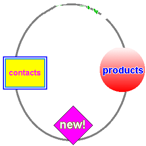

See Demo
Left Side : Original Image with image map Right Side: Plugin customised image map To
To
 To
jquery.dynamic.imagemap
A jQuery plugin to create dynamic elements to be placed over image map area tag by using the coordinates in
corresponding area tag. This plugin can be useful when server responds with some coordinates on image and need to
create some custom element which will placed on top of image with respect to these coordinates. Here coordinates data
are given from server side to area tag "coords" attribute.
Installation
npm install dynamic-imagemapUsage
Javascript
$(document).ready(function() {
$('#first-image').dynamicImageMap({
areas: $('#first-map area') /* Area tags inside of image corresponding map tag */
});
/* Here image "usemap" attribute is checked to find the area tags */
$('#second-image').dynamicImageMap();
});HTML
<img id="first-image" src="planets.gif" width="145" height="126" alt="Planets" usemap="#planetmap">
<map id="first-map" name="planetmap">
<area shape="rect" coords="0,0,82,126" data-style="background: red" alt="Sun" href="sun.htm">
<area shape="circle" coords="90,58,3" data-class="mercury" data-style="background: yellow" alt="Mercury" href="mercur.htm">
<area shape="circle" coords="124,58,8" data-class="venus" data-style="background: green" alt="Venus" href="venus.htm">
</map>Documentation
The dynamicImageMap method will accept one optional object argument.
Optional object parameter
- areas : The area tags selector that used for image map.
The area tag can have some data attributes in HTML which is used to pass data to custom created dynamic elements. The following are data attributes
- data-class : The class names that passed to custom created element.
- data-style : The styles that passed to custom created element.
- data-content : The inner html that passed to custom created element.
A wrapper div container is placed automatically created on image on method call. We can pass class and style to container using data attributes in image tag.
- data-class : The class names that passed to wrapper of image element.
- data-style : The styles that passed to wrapper of image element.
An example is placed in example folder. Please take map.html in web browser to see what happens with plugin usage.
Notes
The v0.0.1 only supports area tags with shape "circle" and "rect". The "poly" area shape is still not supported.
License
The MIT License (MIT)
Copyright (c) 2015 Justin John Mathews justinjohnmathews@gmail.com